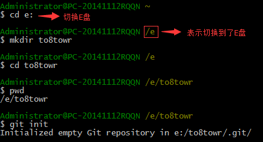

创建版本库
安装完成后，就可以使用Git来创建版本库了。
打开Git Bash,在一个你认为合适的地方创建版本库，输入命令如下（“--”后面的为文字说明）：
$ git mkdir to8towr -- 创建一个名为to8towr的版本库（文件夹），这个就是所谓的工作区
$ cd to8towr -- 切换到to8towr那个文件夹（这个命令说明一下：上面写法的默认路径是C:\Users\Administrator，如果要切换到别的盘，命令为 $ cd e:（E盘为例）,在E盘基础上，切换到某个文件夹命令同上 $ cd + "文件夹名"）
$ pwd -- 查看这个文件夹路径
$ git init -- 输入这个命令之后，就表示Git可以管理这个仓库了。并且这个文件夹下会出现 .git 这个文件夹（隐藏文件），没事别动它，不好惹。如果你要脱离git控制，可以删除它
